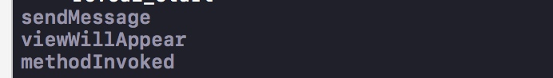

在软件业，AOP为 Aspect Oriented Programming 的缩写，意为：面向切面编程，通过预编译方式和运行期动态代理实现程序功能的统一维护的一种技术。
介绍
在 RxCocoa 的代码中，对于 NSObject 的扩展中，有这两个代码，实现了对于实例方法的 AOP
public func sentMessage(_ selector: Selector) -> Observable<[Any]>
public func methodInvoked(_ selector: Selector) -> Observable<[Any]>
在本质上说，它们对 selector 的触发时机进行监听，并分别在 selector 触发前、触发后插入自定义的方法。
下面是具体的使用场景：
import UIKit
import RxSwift
import RxCocoa
class ViewController: UIViewController {
private let bag = DisposeBag()
override func viewDidLoad() {
self.rx.sentMessage(#selector(ViewController.viewWillAppear(_:))).asObservable().subscribe { (_) in
print("sendMessage")
}.disposed(by: bag)
self.rx.methodInvoked(#selector(ViewController.viewWillAppear(_:))).asObservable().subscribe { (_) in
print("methodInvoked")
}.disposed(by: bag)
}
override func viewWillAppear(_ animated: Bool) {
super.viewWillAppear(animated)
print("viewWillAppear")
}
}
输出结果

最终的效果是在该方法的执行前与执行后的两个时间点插入了对应的方法。
下面我们就剖析一下，RxCocoa 究竟做了些什么。
本文会从外部调用的方法 setMessage 开始，一步步查看内部的具体的实现。
Let's go
简单剖析一下上面的代码，它们分别是对于两个 Observable 进行了监听 (RxSwift的介绍)。换句话说，在实际的实现过程中，
selector 对应的方法在即将执行前肯定是要触发 setMessage 所对应的 Observable 并发出信号。
selector 对应的方法在执行完成肯定要触发 methodInvoked 所对应的 Observable 并发出信号。
当然，这都是我们基于当前的调用方法给出的推测，那看看实际都做了些什么。
首先看 setMessage 所对应的方法的具体实现。
public func sentMessage(_ selector: Selector) -> Observable<[Any]> {
return synchronized {
// in case of dealloc selector replay subject behavior needs to be used
if selector == deallocSelector {
return deallocating.map { _ in [] }
}
do {
let proxy: MessageSentProxy = try registerMessageInterceptor(selector)
return proxy.messageSent.asObservable()
}
catch let e {
return Observable.error(e)
}
}
}
上面的代码有2行是核心。
let proxy: MessageSentProxy = try registerMessageInterceptor(selector)
proxy.messageSent.asObservable()
其中第一行代码实现的功能是：为该selector创建或者获取一个代理对象。
第二行代码，则是返回 messageSent 的信号源，它能保证在恰当的时候出发信号。
下面分别要对这两个代码进行具体的分析。
MessageSentProxy
贴一下MessageSentProxy的具体的代码：
fileprivate final class MessageSentProxy
: MessageInterceptorSubject
, RXMessageSentObserver {
typealias E = [AnyObject]
let messageSent = PublishSubject<[Any]>() //message所对应的subject（Observable），也就是被观察者
let methodInvoked = PublishSubject<[Any]>()//invoked 所对应的被观察者
@objc var targetImplementation: IMP = RX_default_target_implementation()
var isActive: Bool {
return targetImplementation != RX_default_target_implementation()
}
init() {
}
@objc func messageSent(withArguments arguments: [Any]) -> Void {
messageSent.on(.next(arguments))
}
@objc func methodInvoked(withArguments arguments: [Any]) -> Void {
methodInvoked.on(.next(arguments))
}
deinit {
messageSent.on(.completed)
methodInvoked.on(.completed)
}
}
从上面可以看出，MessageSentProxy 这个类分别持有了名为 messageSent 以及 methodInvoked 的两个被观察者。
应该可以看出，他们分别对应着 selector 前后的触发时机，对这两个参数进行监听，也就是变相的监听了selector 触发的前后的时机。
其中内部的 messageSent(withArguments arguments: [Any]) 以及 methodInvoked(withArguments arguments: [Any]) 方法分别调用并促使两个被观察者发出信号。
两个方法分别用 @objc 进行修饰，标明两个方法都可以被 OC 的调用机制触发。
那当前可以整理出的触发顺序是：
1. MessageSentProxy 中 messageSent(withArguments arguments: [Any]) 方法被调用
2. MessageSentProxy 中 messageSent = PublishSubject<[Any]>() 触发 onNext 信号
3. 外部对于 messageSent 的监听事件触发
那好，继续深究一下。
registerMessageInterceptor(selector)
上面讲到 registerMessageInterceptor(selector) 方法是通过 selector 来创建一个MessageSentProxy, 用来实现 Observable. 由于同一个 selector 可能有2个监听事件 sentMessage 以及 methodInvoke, 而两者都是通过同一个 MessageSentProxy 来实现。因此最终一个selector对应于一个 MessageSentProxy, 也不需要进行反复的创建。
那究竟做了哪些事情呢？
//该方法保证了，在同一个target上 同一个selector 只会有 一个MessageInterceptorSubject与之绑定。
fileprivate func registerMessageInterceptor<T: MessageInterceptorSubject>(_ selector: Selector) throws -> T {
let rxSelector = RX_selector(selector) //添加前缀，生成一个新的selector 当前只有名字
let selectorReference = RX_reference_from_selector(rxSelector)
let subject: T
if let existingSubject = objc_getAssociatedObject(base, selectorReference) as? T { //如果这个selector有关联值的话， 赋值给subject
subject = existingSubject
}
else { //如果没有，则创建一个Subject对象，把它关联给当前的base
subject = T()
objc_setAssociatedObject(
base,
selectorReference,
subject,
.OBJC_ASSOCIATION_RETAIN_NONATOMIC
)
}
if subject.isActive { // 表示其内部的IMP 其实已经赋值了， 否则就是还没有赋值。
return subject
}
var error: NSError?
let targetImplementation = RX_ensure_observing(base, selector, &error)
if targetImplementation == nil {
throw error?.rxCocoaErrorForTarget(base) ?? RxCocoaError.unknown
}
subject.targetImplementation = targetImplementation!
return subject
上面的代码做了大概几件事：
1.将 MessageInterceptorSubject，也就是该方法调用处的 MessageSentProxy 通过 selector 与当前的对象进行绑定。
2.如果对应的 selector 已经绑定过了，则获取已绑定的 MessageSentProxy.
这是由于对应同一个selector，我们可能有 sentMessage 以及 methodInvoke 两个监听事件，两个监听事件可以使用同一个MessageSentProxy, 避免重复工作。
3.开始 hook 对应的 selector，进行插入操作
核心代码
let targetImplementation = RX_ensure_observing(base, selector, &error)
解读方法的hook
这也是当前这个过程中最核心的部分。
还记得KVO是怎么实现的吗？如果不记得，可以在看一下(KVO代码测试以及探究)
继续向下深究RX_ensure_observing(base, selector, &error),并且删除用于行，留下核心代码
/**
This is the main entry point for observing messages sent to arbitrary objects.
*/
-(IMP __nullable)ensurePrepared:(id __nonnull)target forObserving:(SEL __nonnull)selector error:(NSErrorParam)error {
Method instanceMethod = class_getInstanceMethod([target class], selector); //根据target sel 获取method
Class __nullable swizzlingImplementorClass = [self prepareTargetClassForObserving:target error:error];
if (swizzlingImplementorClass == nil) {
return nil;
}
NSString *methodEncoding = RX_method_encoding(instanceMethod);
RXInterceptWithOptimizedObserver optimizedIntercept = optimizedObserversByMethodEncoding[methodEncoding];
if (!RX_method_has_supported_return_type(instanceMethod)) {
RX_THROW_ERROR([NSError errorWithDomain:RXObjCRuntimeErrorDomain
code:RXObjCRuntimeErrorObservingMessagesWithUnsupportedReturnType
userInfo:nil], nil);
}
// optimized interception method
if (optimizedIntercept != nil) {
IMP interceptorIMPForSelector = [self interceptorImplementationForSelector:selector forClass:swizzlingImplementorClass];
if (interceptorIMPForSelector != nil) {
return interceptorIMPForSelector;
}
if (!optimizedIntercept(self, swizzlingImplementorClass, selector, error)) {
return nil;
}
interceptorIMPForSelector = [self interceptorImplementationForSelector:selector forClass:swizzlingImplementorClass];
if (interceptorIMPForSelector != nil) {
return interceptorIMPForSelector;
}
}
// default fallback to observing by forwarding messages
else {
if ([self forwardingSelector:selector forClass:swizzlingImplementorClass]) {
return RX_default_target_implementation();
}
if (![self observeByForwardingMessages:swizzlingImplementorClass
selector:selector
target:target
error:error]) {
return nil;
}
if ([self forwardingSelector:selector forClass:swizzlingImplementorClass]) {
return RX_default_target_implementation();
}
}
RX_THROW_ERROR([NSError errorWithDomain:RXObjCRuntimeErrorDomain
code:RXObjCRuntimeErrorUnknown
userInfo:nil], nil);
}
那实际是如何 fake 出一个新的派生类来取代原来的 class 呢？
-(Class __nullable)prepareTargetClassForObserving:(id __nonnull)target error:(NSErrorParam)error
这个方法做了以下几件事
1.如果已经有了对应的派生类， 则直接返回（通过关联值进行关联）
2.如果 class 方法与 object_getClass 获取的类型不一样，判断是否为 KVO，若不是，默认无法处理，返回错误。
3.生成最终的 fakeClass， 并与关联类型进行绑定。
其中，这个 fakeClass 就类似于KVO机制中的 NSKVONotifying_类名. 都是起到一个替换的作用，让实际方法执行的 selector 被重写，执行的起始以及结尾分别加入触发。
那说到底，还是没有说，具体这两个方法在细节上是如何插入对应的节点的(捂脸)。
有关于 fakeClass 的具体实现过程，我会在下一篇文章中进行详细的描述。